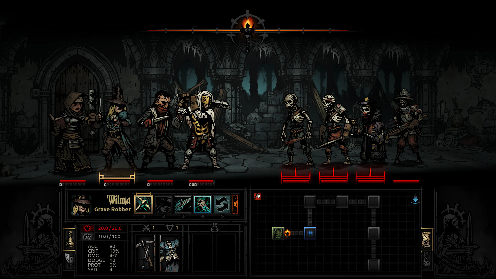
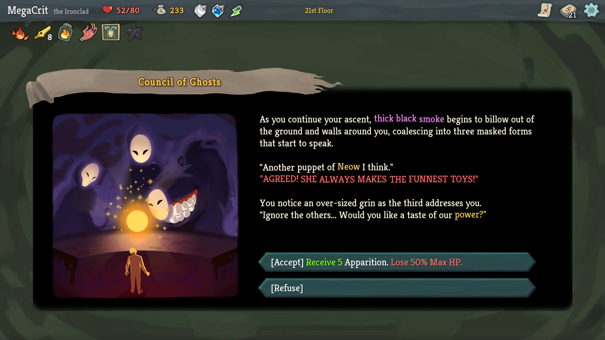

Darkest Dungeon
Nome marcante. Dados mais simples. A arte contorna o texto.

Para o nosso jogo: Cinzel nos nomes; leitura mais discreta nos custos e nas propriedades.
Captura oficial distribuída na página do jogo na Steam. Recorte ampliado para análise.
Slay the Spire
Título, narrativa e consequência têm pesos diferentes.

Para o nosso jogo: parágrafos à esquerda; cor para o que importa; comandos que explicam a ação.
Captura oficial distribuída na página do jogo na Steam. Recorte ampliado para análise.
Identidade
Cinzel 650 nos locais, habilidades e comandos. A fonte ornamental não precisa carregar todas as descrições.
Material
Marfim sobre fundo escuro. Tinta castanha no pergaminho. Dourado concentrado em títulos e seleção.
Legibilidade
Diablo IV documenta três escalas de texto. Fonte: Blizzard. Para nós: dimensionar a moldura para a leitura, sem reduzir tudo a letras minúsculas.